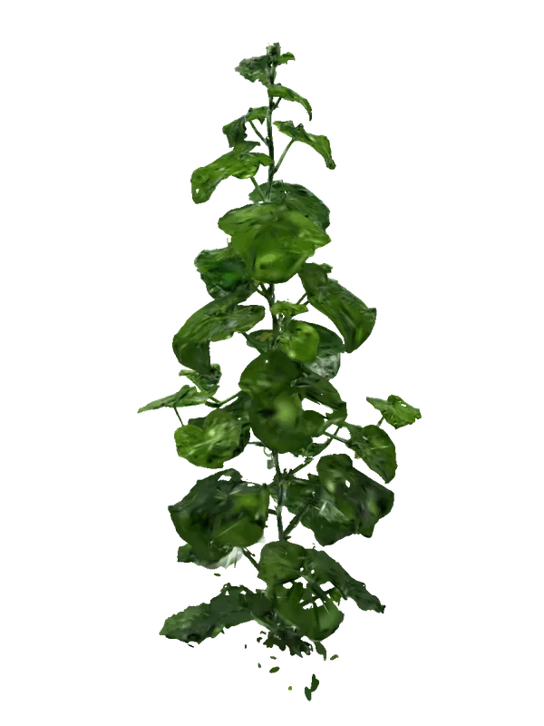
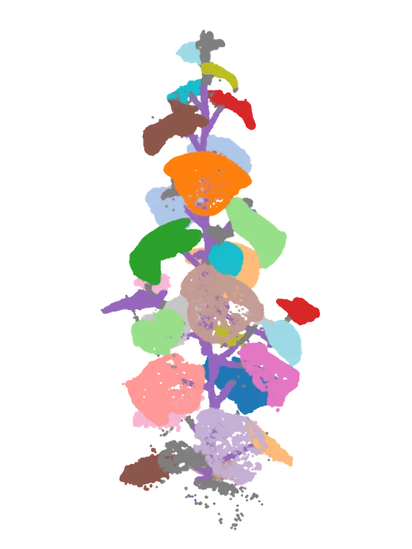

ID A-014VOTE · 0.97
ID A-014VOTE · 0.97
Perception for living systems
AI systems from the physical world.
During my PhD, I built robotic and computer-vision systems to solve problems in real agricultural fields.
01 · Autonomous UAV sensing
A flight stack built for the places GPS cannot reach.
-
From sim to real
-
Autonomous mission execution
-
Turning a mission into a 3D scene
02 · 3D plant phenotyping
From an autonomous flight to organ-level growth curves.
-
Individual plant extraction and reconstruction
precision 0.933 · mIoU 0.890
-
3D organ segmentation
PTv3 point clouds · mean AP50 0.924
-
Across-days monitoring
198 plant-days · logistic R² 0.998


Row B · plant 01 · 3DGS · DAT 24
03 · High-resolution pest sensing
An imaging system that makes pest management measurable.
-
Image analysis for sub-millimetre pests
targets under 1 mm · scanners that vary from user to user
-
A recognition system built to keep iterating
built with cross-domain experts · simple enough to run on site

real scan above · schematic below
04 · Cattle edge intelligence
From a tracked face to an individual behavior record.
-
04–1 · Cattle identity at the edge
tracked ROI · 512-D face embedding · temporal identity vote
-
04–2 · Field system architecture
multi-camera + IoT · local inference · event-only telemetry
ID A-014VOTE · 0.97
 ID B-087VOTE · 0.95
ID B-087VOTE · 0.95
 ID C-203VOTE · 0.96
ID C-203VOTE · 0.96
 ID D-316VOTE · 0.94
ID D-316VOTE · 0.94
Field inputs
CAMMULTI-CAM
IoTMICROCLIMATE
VISION
DETECTROI›
TRACKASSOCIATE›
RE-IDEMBED
VOTE
VOTE
IoT
INGEST › NORMALIZE › FUSE
INDIVIDUAL EVENTIDENTITY · DURATION · BEHAVIOR · THI
Data layer
EVENT STOREON SITE
CLOUDSECURE
USER
BEHAVIOR
ENVIRONMENT
ENVIRONMENT
VIDEO REMAINS AT EDGE · ONLY STRUCTURED EVENTS LEAVE SITE
tracked ROI → 512-D embedding → identity match
At a glance
Research depth, product habits.
Publications
[ journal / conference list — to fill ]
Open source
[ repos, dashboards, tools ]
Field deployments
[ greenhouses, seasons, cohorts ]
Stack
3DGS · COLMAP · SAM3 · PyTorch · Point Transformer · FastAPI · PyQt · Docker
Talks & teaching
[ to fill ]